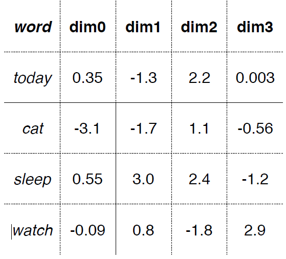

Course Introduction
Natural Language Processing
languages that evolved naturally through human use e.g., Spanish, English, Arabic, Hindi, etc. NOT: controlled languages (e.g., Klingon); programming languages
Levels of linguistic structure

Morphology: 词法 => Sub-word
Supervised learning:
Given a collection of labeled examples (each example is a document X paired with a label Y), learn a mapping from X to Y
Tasks commonly tackled in a supervised setting:
- Sentiment analysis: map a product review to a sentiment label (positive or negative)
- Question answering: given a question about a document, provide the location of the answer within the document
- Textual entailment: given two sentences, identify whether the first sentence entails or contradicts the second one
- Machine translation: given a sentence in a source language, produce a translation of that sentence in a target language
Self-supervised learning:
given a collection of just text (no extra labels), create labels out of the text and use them for representation learning
- Language modeling: given the beginning of a sentence or document, predict the next word
- Masked language modeling: given an entire document with some words or spans masked out, predict the missing words
Representation learning:
given some text, create a representation of that text (e.g., real-valued, low-dimensional vectors) that capture its linguistic properties (syntax, semantics)

Transfer learning:
pretrain a large selfsupervised model, and then fine-tune it on a small downstream supervised dataset
- Transfer learning has recently (last ~2 years) become the method of choice for most downstream NLP tasks.
- Consequently, most of this class will focus on new research in transfer learning for NLP!